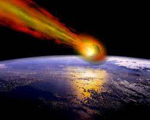

Um desastre natural ocorre quando um evento físico muito perigoso provoca diretamente ou indiretamente danos à propriedade, ou faz um grande número de vítimas, ou ambas. Em áreas onde não há nenhuma presença humana, os fenômenos naturais são chamados de eventos naturais.
O tornado tornado é um fenômeno atmosférico extremamente violento, caracterizado pelo encontro de duas massas com diferentes características de pressão e temperatura. Ao se encontrar, essas massas de ar giram violentamente, causando um vórtice que se conecta, das nuvens ao solo, em formato de cone ou funil.
Ocorrem em conjunto com tempestades e chuvas de granizo, podendo atingir mais de 1 km de diâmetro por onde passam.

À medida que se aproximam da costa, perdem velocidade e ganham altura, que fica de 30 m a 40 m.

Meteoro é um fenômeno luminoso resultante da entrada de fragmentos de um corpo celeste na atmosfera. O atrito desse material sólido em alta velocidade com os gases da atmosfera faz com que ele se torne incandescente e deixe um rastro luminoso no céu.
A maioria dos meteoros se desintegra antes de chegar à superfície da Terra. Aqueles que conseguem chegar ao solo são chamados de meteoritos.

Erupção vulcânica é a saída de magma, pedaços de rochas, gases e cinzas por conta do vulcanismo. O magma é composto de rochas e minerais derretidos devido às elevadíssimas temperaturas do interior da Terra.
Ao entrar em contato com a superfície através das erupções vulcânicas, o magma recebe o nome de lava – que, ao solidificar-se ao longo do tempo, origina as rochas vulcânicas ou magmáticas.
Vídeo:
Como enfretar os desastres naturais no Brasil?
Qual desses você desastres te chama mais atenção?